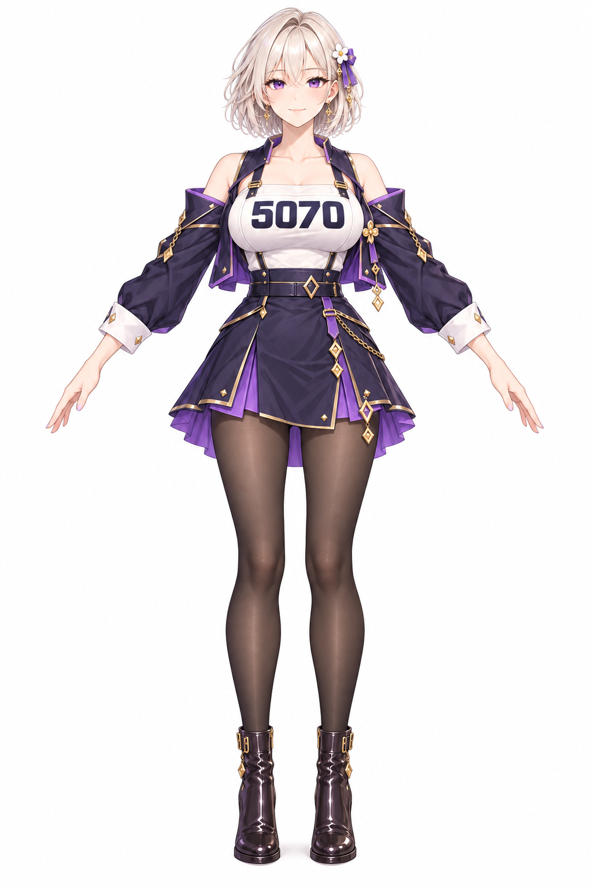
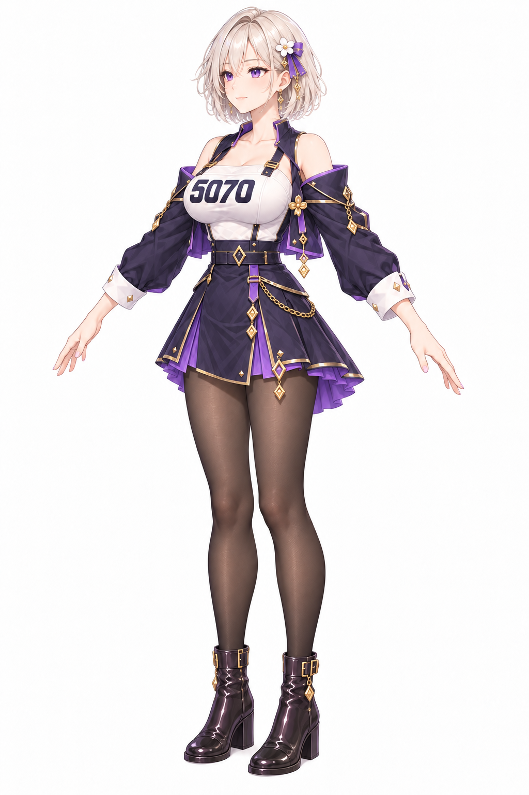
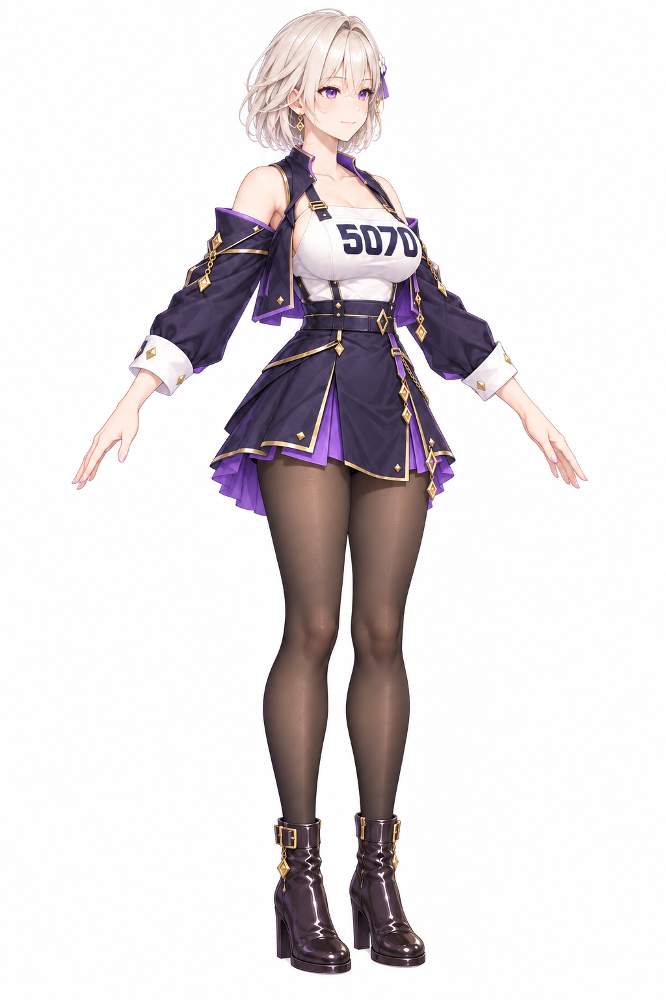
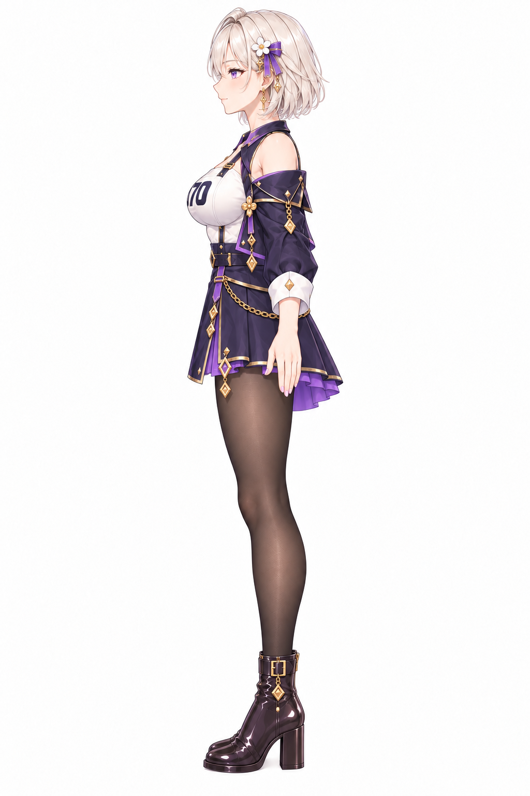
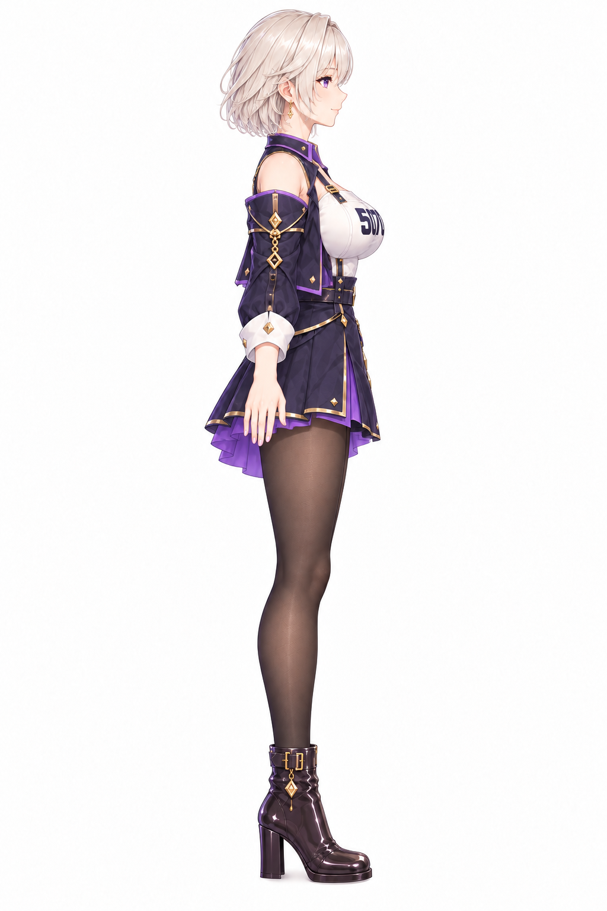
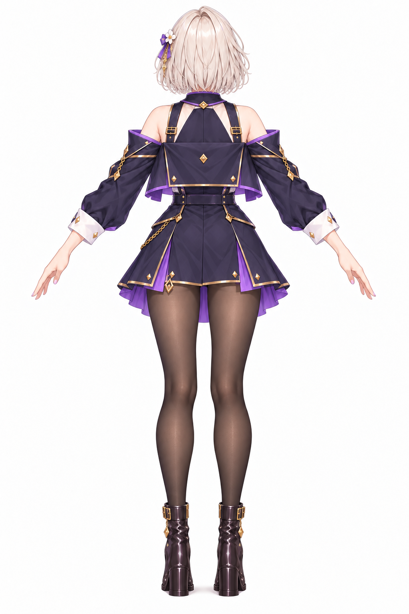
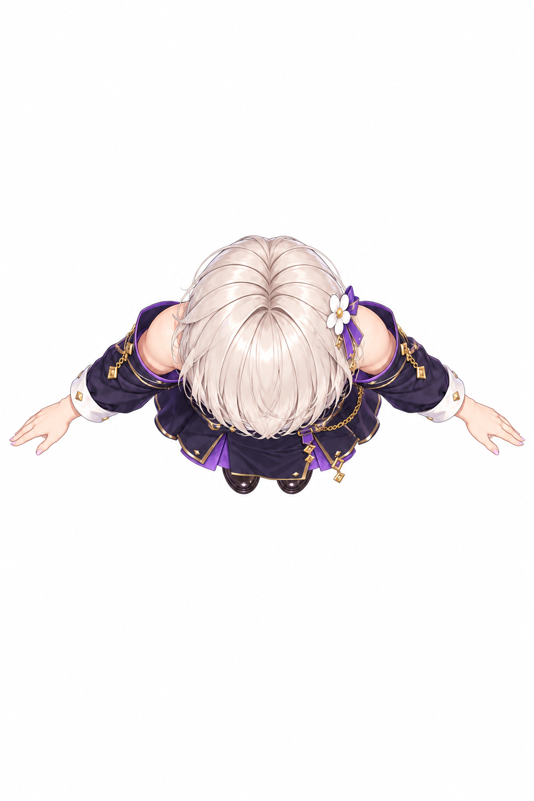

Mao 5070 · 7 ảnh cho Tripo3D
Tải riêng từng PNG · A-pose · Nền trắng · 1024 × 1536







Bottom view: chưa tạo được ảnh.
Tải từng PNG vào ô trùng tên trong Tripo3D. Bộ ảnh được tạo bằng ImageGen, các chi tiết nhỏ giữa các góc có thể khác nhau.